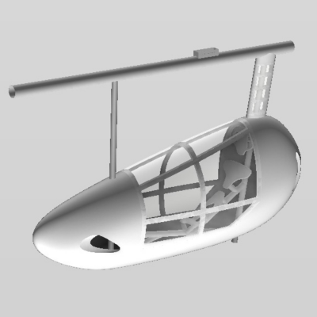
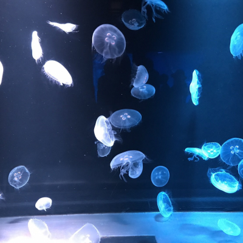

Photos
Below, 11 photos will be selected and switched out of 41 photos once every 10 seconds.







Name: Kaito Masuda
Affiliation:
Graduate School of Agriculture. Kyoto
University.
Participation:
KYOTO UNIVERSITY UNIT OF SYNERGETIC
STUDIES FOR SPACE.
Research Description :
LED irradiation methods and leaf lettuce response in Plant Factories with Artificial
Lighting.
Hobbies: Cooking / Traveling / Driving / Cycling
Interests:
I'm interested in being a data scientist and IT planning and strategist.
I can handle Python / R / HTML / CSS. I am studying Typescript and SQL.
Below, 11 photos will be selected and switched out of 41 photos once every 10 seconds.
2016.04-2018.07: Kyoto University
birdman team ShootingStars | Fairing Group Leader and Designer
I have experience working with Fusion360 in 3DCAD.
2020.09-now: Deep Learning and Machine Learning Study Group | Planning
I have a weekly deep learning study group using TensorFlow and keras in Python3. We are creating a trash AI.
2016.05-now: Try-Plus Takaragaike
Station School | Cram School Teacher
I have taught a wide range of students from elementary to high school.
2016.05-now: KYOTO UNIVERSITY
UNIT OF SYNERGETIC STUDIES FOR SPACE. | OA
I am involved in a wide range of activities, including updating the web page, participating in the Space
Wood Utilization Research Group, participating in long-term vacuum wood experiments (creating a program
using Python), supporting simulated microgravity experiments in manned space studies, and boarding a
parabolic flight experiment.
2018.11-2019.03: HILLTOP Corporation |
Modeler
Utilizing the drafting skills developed in the human-powered airplane manufacturing team, I gained
experience in causing 2D to 3D drawings and creating cutting programs using GO2cam and SOLIDWORKS.
2019.12: Robotic Classroom | Administrative Support
I was in charge of general robotics with Arduino and 3D printer for elementary school students.
-2015.03: Graduated from Chiba Prefectural Chiba Senior High School.
-2016.03: Gap year.
-2020.03: Graduated from Department of Agricultural and Environmental Engineering, Faculty of
Agriculture, Kyoto University.
2020.04-: Present post.


masuda.kaito.27m [] st.kyoto-u.ac.jp
Please change from [] to at mark.